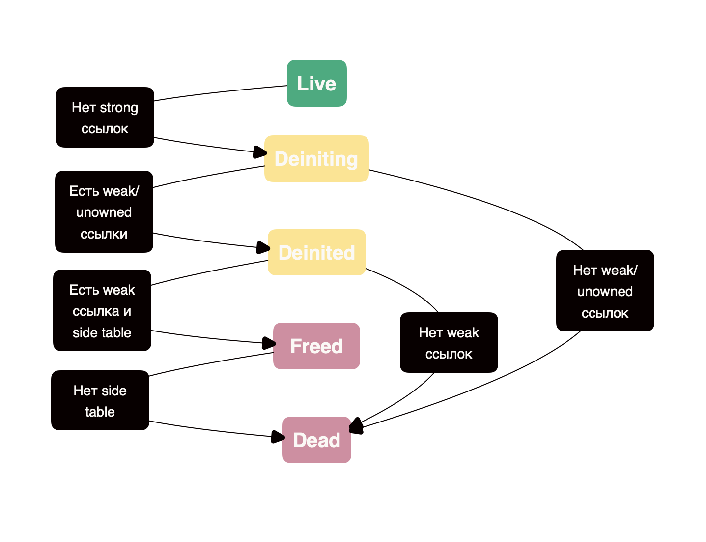

2. Подробнее про ARC
Изучение данного блока предполагает предварительное знание синтаксиса языка Swift. Для успешного освоения этого материала, необходимо иметь базовое понимание синтаксиса языка Swift. Это включает в себя знание основных структур данных, операторов, циклов, функций, абстракций и других ключевых элементов языка. Без этих фундаментальных знаний будет сложно понять более сложные концепции и примеры, которые будут рассматриваться в данном блоке.
Automatic Reference Counting (ARC) — это механизм управления памятью, встроенный в Swift и Objective-C, который автоматически управляет жизненным циклом объектов. Его задача — освободить разработчиков от необходимости вручную выделять и освобождать память, как это делается в MRC.
ARC автоматически отслеживает количество активных ссылок на объект, и когда объект больше не используется, он освобождается из памяти. В основе этого механизма лежат три типа ссылок: strong, weak и unowned, каждая из которых играет свою роль в управлении памятью.
Strong references¶
Это ссылка, которая увеличивает счётчик ссылок объекта. Пока хотя бы одна сильная ссылка указывает на объект, он будет оставаться в памяти.
class Car {
let model: String
init(model: String) {
self.model = model
}
}
var car1: Car? = Car(model: "Tesla") // Сильная ссылка на объект Car
var car2: Car? = car1 // Сильная ссылка на тот же объект Car
car1 = nil // объект Car не будет освобождён, так как на него всё ещё указывает car2
car2 = nil // теперь объект будет деинициализирован
Возможные проблемы¶
Главная проблема сильных ссылок заключается в циклической зависимости (retain cycle), когда два объекта ссылаются друг на друга через сильные ссылки. В таком случае объекты никогда не будут освобождены, поскольку их ссылки взаимно удерживают друг друга в памяти.
class A {
var b: B?
}
class B {
var a: A?
}
var objA: A? = A()
var objB: B? = B()
objA?.b = objB
objB?.a = objA
objA = nil
objB = nil
// Циклическая зависимость: объекты остаются в памяти
Для предотвращения циклических зависимостей в таких ситуациях, одна из ссылок должна быть слабой. Это разрывает цикл ссылок, позволяя объектам корректно освобождаться.
class A {
var b: B?
}
class B {
weak var a: A? // Слабая ссылка разрывает циклическую зависимость
}
var objA: A? = A()
var objB: B? = B()
objA?.b = objB
objB?.a = objA
objA = nil
objB = nil
// Теперь объекты A и B корректно освобождаются, так как weak ссылка не удерживает их в памяти
Weak references¶
Слабые ссылки позволяют ссылаться на объект без увеличения этого счётчика. Это означает, что объект может быть освобождён, даже если на него существуют Weak ссылки.
Главная задача Weak ссылок — предотвращение циклических зависимостей между объектами.
Как это работает?¶
Когда объект, на который ссылается Weak ссылка, освобождается из памяти, ссылка автоматически становится nil. Это важная особенность, которая защищает от попыток обращения к освобождённому объекту и предотвращает ошибки, такие как dangling pointers.
Unowned references¶
Они, как и weak ссылки, позволяют избежать увеличения счётчика ссылок объекта. Однако unowned ссылки обладают рядом отличий, которые делают их уникальными и применимыми в определённых ситуациях.
Основная особенность unowned ссылок заключается в том, что они никогда не обнуляются (в отличие от слабых ссылок), даже если объект, на который они указывают, был освобождён.
Возникает вопрос: Сильные ссылки - удерживают объект, слабые ссылки - обнуляются, когда умирает объект, а как ведут себя Unowned ссылки?
- unowned ссылки не удерживают объект в памяти, как сильные ссылки, и не обнуляются, как слабые ссылки, когда объект освобождается. Это просто ссылка на объект, который должен существовать на момент использования. Но если объект был освобождён, ссылка остаётся как бы “висящей”, и любое обращение к ней приведёт к crash с runtime exception.
Использовать unowned ссылки нужно в тех случаях, когда объект гарантированно будет жив так долго, как и тот объект, который хранит на него ссылку. Однако, если обратиться к unowned ссылке после того, как объект был освобождён, в приложении будет краш.
class Customer {
let name: String
var card: CreditCard?
init(name: String) {
self.name = name
print("\(name) is being initialized")
}
deinit {
print("\(name) is being deinitialized")
}
}
class CreditCard {
let number: String
unowned let owner: Customer // Unowned ссылка на владельца
init(number: String, owner: Customer) {
self.number = number
self.owner = owner
print("Card \(number) is being initialized")
}
deinit {
print("Card \(number) is being deinitialized")
}
}
var customer: Customer? = Customer(name: "Alice")
customer?.card = CreditCard(number: "1234-5678-9012", owner: customer!)
customer = nil // Освобождаются и Customer, и CreditCard
Производительность weak и unowned¶
Weak ссылки немного сложнее в реализации и чуть медленнее, чем unowned ссылки, из-за необходимости автоматического обнуления. Когда объект, на который указывает weak ссылка, освобождается, ARC должен найти все слабые ссылки на этот объект и обнулить их.
Это требует наличия так называемой side table — вспомогательной таблицы, которая отслеживает все слабые ссылки на объект. Когда объект уничтожается, ARC обнуляет все weak ссылки через эту таблицу. Это дополнительное действие добавляет небольшой оверхед к производительности.
Механизм работы side table¶
1) Каждый объект, на который есть хотя бы одна weak ссылка, имеет свою side table.
2) В этой таблице хранятся все weak ссылки, указывающие на объект.
3) Когда объект освобождается, ARC проходит по side table и обнуляет все weak ссылки.
Хотя это незначительная нагрузка, но в сценариях с очень частым созданием и освобождением объектов, обнуление weak ссылок может оказать минимальное, но измеримое влияние на производительность.
Заключение: Сравнение weak и unowned¶
| Характеристика | weak | unowned |
|---|---|---|
| Опциональность | Опциональная (может быть nil) |
Неопциональная (не может быть nil) |
| Обнуление | Автоматически обнуляется, когда объект освобождён | Никогда не обнуляется |
| Поддержка ARC | Требует side table для обнуления | Не требует дополнительной таблицы |
| Безопасность | Безопасна, не вызывает крашей при освобождении объекта | Может привести к крашу при освобождении объекта |
| Производительность | Чуть медленнее, так как требует обнуления | Быстрее и более оптимизировано |
| Когда использовать | Когда объект может быть освобождён до того, как перестанет быть нужным | Когда объект гарантированно существует так же долго, как и ссылка |
Разбор жизненного цикла ссылок¶
Каждый объект может проходить через несколько состояний: Live, Deiniting, Deinited, Freed, и Dead. Давайте рассмотрим каждое состояние и разберём, как ARC обрабатывает объекты на каждом из этапов.

Live¶
Когда объект создаётся, он находится в состоянии Live. Это означает, что на объект существует хотя бы одна strong ссылка. Пока существует хотя бы одна strong ссылка, объект остаётся в памяти и может использоваться приложением.
Переход к следующему состоянию¶
Когда все strong ссылки на объект удаляются, он переходит в состояние Deiniting. Это означает, что объект больше не нужен и должен быть подготовлен для освобождения.
Deiniting¶
Состояние Deiniting наступает, когда все strong ссылки на объект были удалены. Однако на объект могут всё ещё указывать unowned ссылки, которые не увеличивают счётчик ссылок. Как мы обсуждали ранее - эти ссылки предполагают, что объект будет существовать так же долго, как и другие объекты, которые ссылаются на него через unowned ссылки.
Начиная с этого состояния weak ссылки будут возвращать nil, а unowned assertion failure(краш приложения).
Переход к следующему состоянию¶
- Если на объект есть unowned ссылки, он переходит в состояние Deinited.
- Если нет ни unowned ссылок, ни weak ссылок, объект сразу переходит в состояние Dead.
Deinited¶
В этом состоянии объект деинициализирован, но на него могут оставаться weak ссылки. Эти ссылки не удерживают объект в памяти и становятся nil, как только объект полностью освобождён.
Переход к следующему состоянию¶
- Если на объект остались weak ссылки, он переходит в состояние Freed.
- Если weak ссылок нет, объект сразу переходит в состояние Dead.
Freed¶
В состоянии Freed объект освобождён, но таблица weak ссылок (side table) может всё ещё существовать для отслеживания слабых ссылок. Объект больше не используется, но side table сохраняется для корректного обнуления слабых ссылок.
Переход к следующему состоянию¶
Когда side table больше не нужна и выгружается, объект переходит в состояние Dead.
Dead¶
Это финальная стадия жизненного цикла объекта. В состоянии Dead объект полностью освобождён из памяти, и на него больше не существует ни weak, ни unowned ссылок. Память, занимаемая объектом, теперь доступна для повторного использования.
Интересный вопрос с собеседования¶
Почему Weak переменная не может быть объявлена как let?¶
Weak переменная не может быть объявлена как let по причине того, что значение weak ссылки может изменяться на протяжении жизненного цикла программы.
Когда объект, на который указывает weak ссылка, освобождается, ARC автоматически присваивает этой ссылке значение nil. Поэтому, если бы weak переменная была объявлена как let, это противоречило бы семантике неизменяемых переменных, поскольку переменная, помеченная как let, должна оставаться неизменной после инициализации.